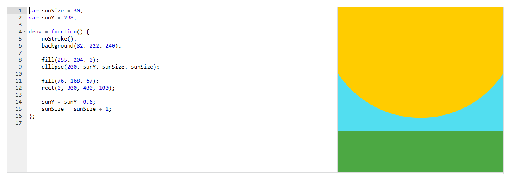

El sol que explota
Un sol amarillo nace detrás del suelo y se va haciendo cada vez más grande hasta llenar el cielo. Es la primera animación del sitio: el programa repite draw() y en cada vuelta cambia dos variables, sunSize y sunY.
Resultado
Código
Código del proyecto de Khan Academy. En js/sol-explota.js está adaptado a p5.js para funcionar en una página web.
var sunSize = 30;
var sunY = 298;
draw = function() {
noStroke();
background(82, 222, 240);
fill(255, 204, 0);
ellipse(200, sunY, sunSize, sunSize);
fill(76, 168, 67);
rect(0, 300, 400, 100);
sunY = sunY -0.6;
sunSize = sunSize + 1;
};En Khan Academy la animación se escribe asignando una función a draw. En p5.js se declara como function draw(); el resto de las instrucciones no cambia. Los botones de arriba solo pausan y reinician las dos variables (js/sol-explota.js).
Conceptos que se practican
| Elemento | Qué hace |
|---|---|
var sunSize, var sunY | Variables declaradas fuera de draw(): conservan su valor entre fotogramas. Si estuvieran dentro, se reiniciarían en cada vuelta y no habría animación. |
draw() | Se ejecuta unas 60 veces por segundo. Cada ejecución dibuja un fotograma completo. |
background() | Se llama al inicio de draw() para borrar el fotograma anterior; sin ella el sol dejaría un rastro. |
sunY = sunY - 0.6 | Mueve el centro del sol hacia arriba (en p5.js y disminuye hacia arriba) 0.6 píxeles por fotograma. |
sunSize = sunSize + 1 | Aumenta el diámetro 1 píxel por fotograma: el radio crece 0.5, mientras el centro sube 0.6. Por eso el borde inferior casi no se mueve y parece que el sol «sale» del horizonte. |
Orden de dibujo | El suelo verde se dibuja después del sol, así que lo tapa. Si se invirtiera el orden, el sol se vería por delante del suelo. |
Captura del editor original
